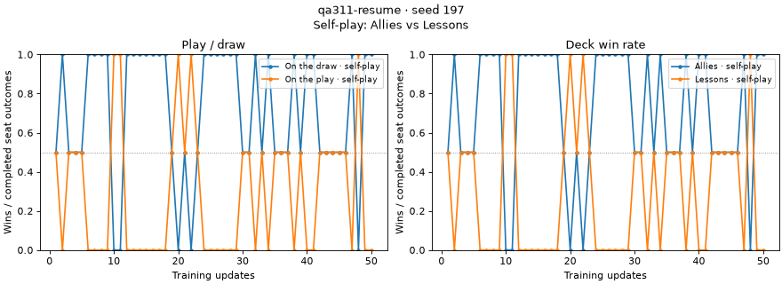

Run on 2026-11-12 at dafbc985e plus the docs fix below, on CPU, using the installed manabot train CLI, Etude 0.2.16's reader, and manabot's report loader (load_evidence → self_play_figures). Runs are in ignored .runs/qa311-*.
uv run manabot train --recipe local --device cpu --out .runs/qa311-a finished in about 6 s. The Etude run holds artifacts/<sha256>.json tables and no self-play-outcomes/ directory. Running the docs/training.md snippet unchanged:
1.0 ({'deck': '7d663f0e…', 'opponent_deck': 'fc948195…', 'position': 'draw', 'wins': 1, 'losses': 1, 'draws': 0}, {'deck': 'fc948195…', …, 'position': 'play', 'wins': 1, 'losses': 1, 'draws': 0})
2.0 ({… 'position': 'draw', 'wins': 2, 'losses': 0 …}, {… 'position': 'play', 'wins': 0, 'losses': 2 …})
Through load_evidence, both update rows carry the projected self_play_outcomes/<deck>/<opp>/<play|draw>/… counts alongside about 400 ordinary metrics. No bare self_play_outcomes digest is left in the rows. self_play_points returns the same counts.
Same counts as main: running the same recipe and seed from an origin/main worktree (48cb12b54), then reading the result with main's reader, gave the same four points: 1–1, 1–1, 2–0, 0–2.
--steps 40 wrote only 3 table files, because tables are named by content and identical tables share a file. Etude's read_table still returns 40 tables (x = 1…40), and the report has 80 points (2 positions × 40 updates). Nothing was lost.
I trained a regime file (the local recipe with 60 updates and recovery_max_microsteps) and sent SIGINT to its process group after 14 s. It stopped as interrupted at update 5. --resume-from 35da4ae6… into a sibling --out continued the same Etude run until the regime's 120 s wall stopped it at update 50, also as interrupted, which is expected for that wall.
attempts [('bb760f40', {}), ('4e53db77', {'updates': 5.0, 'learner_transitions': 1759.0})]
read_table: 50 tables, x = 1..50, no duplicates
report: child run 50 rows, all 50 with outcomes; parent run 5 rows, all with outcomes

The report's figure labels the decks (Allies vs Lessons) and plots 50 updates.
The main worktree wrote .runs/qa311-old in the retired format (artifacts/self-play-outcomes/ plus a self_play_outcomes/table metric). This branch's report loader refuses it:
ValueError: run 060ddd4a… records self-play outcomes in the retired 'self_play_outcomes/table' format; read it from manabot revision bf4e280f7
Main's reader, which the message points to (by way of an example revision), reads that run correctly. Etude's own read_table returns nothing for it, because the table name differs. The documented path is manabot's reader.
Deleting one table file from a copy raises FileNotFoundError naming …/artifacts/43b5df01….json. Overwriting it with other JSON raises EtudeError: table_artifact_damaged, and the chained ValueError names the same path. Neither case is silently empty.
The command in the report, uv run --locked --extra artifacts python scripts/diagnose_outcome_index.py, runs in 0.2 s. Refresh peak was 35,666 bytes (scalar) and 6,408 bytes (table) at 1, 4 and 8 blocks; the manifest reached 389,180 versus 5,709 bytes at 8 blocks. These match the dated line in experiments/self-play-collection-273.md exactly.
docs/training.md: the example output showed 'deck': 'Elemental' with made-up counts. Rows actually hold deck identities, as the collector records them. The paragraph now says so, and the example is the real output from scenario 1.log_update and log_table. SIGINT never landed in that gap; the reasoning for it is in plan.md.Nothing found in this change. A side observation, not new: resuming requires a regime file, because --recipe refuses --resume-from with "--recipe cannot be combined with regime inputs or resume/cadence controls". That error message doesn't say to use --regime.